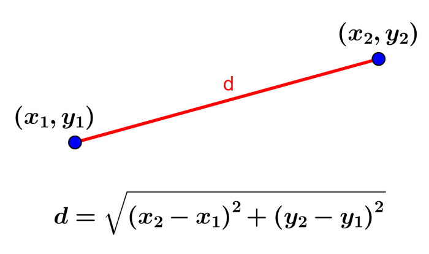

Distancia entre dos puntos
La distancia entre dos puntos es igual a la longitud del segmento que los une. Calcular los cuadrados de las diferencias entre sus coordenadas y luego hallar la raíz de la suma de dichos cuadrados.

Distancia
Coordenadas del primer punto:
Coordenadas del segundo punto: